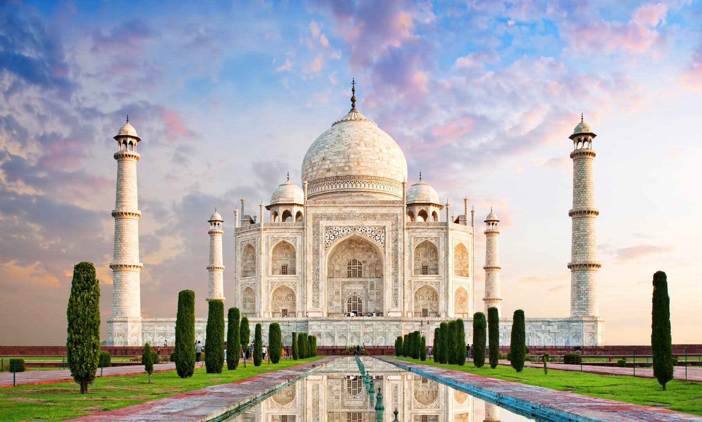
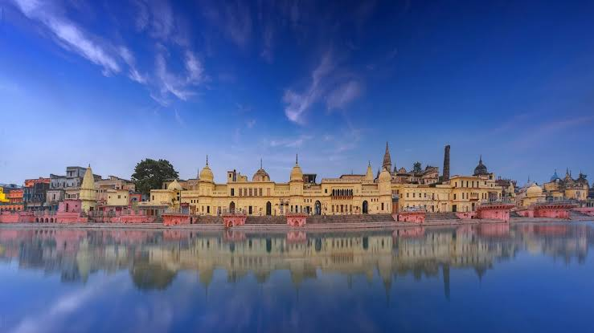

Introduction
I love travelling because it gives me a chance to explore new places and learn new things. Travelling makes us happy and helps us learn about different cultures, people, and traditions.
India has many beautiful places to visit. Mountains, beaches, forests, and historical places make India a wonderful country for travellers.

To know more about travelling you can visit the link : Travel guide
My Favourite Travel Places
1. Goa
Goa is famous for its beautiful beaches and delicious food. I would love to visit Goa with my friends and enjoy the sea.Many tourists visit this place to enjoy the beaches.
2. Charminar
Charminar is a famous monument in Hyderabad. It is known for its beautiful architecture and historical importance. Many tourists visit Charminar to enjoy its beauty and explore the nearby markets.
3. Ayodhya
Ayodhya is a famous city in Uttar Pradesh. It is known for the Ram Mandir and its religious importance. Many tourists visit Ayodhya to explore its temples and learn about its history and culture.

How to Plan a Trip
The steps you need top follow before travelling:
- Choose a place to visit.
- Plan our budget.
- Book tickets.
- Pack our bags.
- Enjoy the trip.
Important things you need to carry:
- Clothes
- Mobile phone
- Water bottle
- Camera
Travel Places Table
| Place | Famous For |
|---|---|
| Goa | Beaches |
| Charminar | Beautiful architecture |
| Ayodhya | history |
you can get more information and safety tips from the link given: Lonely Planet.
Conclusion
Travelling is a wonderful experience. It helps us explore new places, meet new people, and learn about different cultures. I hope to visit many beautiful places in the future. Travelling gives us happy memories and makes life more interesting. However,travelling should be planned properly.we should firstly decide our budget,then book your tickets,carry all the necessary things,and follow safety tips,also we need to ensure that the place we visit clean and avoid throwing trash in public area. Personally i believe travelling is a wonderful experience travelling doen not always mean to go expensive or far places,we can visit nearby village or town,park or anything that you enjoy,what matters more is your experience and memories you make thare. Travelling helps us in many ways , it teaches many things,it teache us t0 respect different cultures and understand other peoples way of life. To conclude,travelling makes our lives happier teaches us valuable lessons,and gives us memories that we can cherish for a long time.I hope to visit many places in future with friend and family,learn more and make memories.Therefore,we should take every oppotunity to explore the world and enjoy the beauty around us.